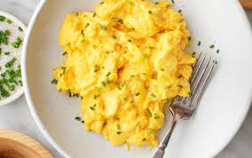

Morning Eggs

A healthy breakfast
Easy eggs to make in the morning and start your day. Plenty of protein and
some greens!
Ingredients:
- 3 Eggs
- Chopped frozen spinach
- Chik'n
- Thaw spinach in pan
- Warm up chik'n
- Crack eggs into pan
- Cook for 10 minutes at 250 degrees F
Back